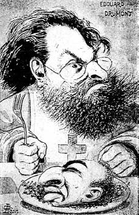
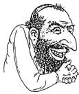

10 Kasım 1898
Taxil'den, Diana'dan, hepsinden önemlisi Dalla Piccola'dan kurtulalı bir buçuk yıl oldu. Eğer hasta idiysem, artık iyileştim. Otohipnoz veya Doktor Froïde sayesinde oldu bu. Gene de bu ayları farklı kaygılarla yaşadım. İnançlı biri olsaydım pişmanlıklar, eziyetler çektim derdim. Ama neden pişmanlık duyacağım, kimden eziyet göreceğim ki?
Taxil'i kandırmaktan duyduğum hoşnutluğu, huzurlu bir keyifle kutladım. Tek üzüntüm zaferimi biriyle paylaşamamaktı ama kendimi tek başıma mutlu etmeye alışkınım. Magny diasporasından dağılanlar gibi Brébant-Vachette'e gittim. Taxil işinin başarısızlığından kazandığım parayla her şeyi yapabilirdim. Şef garson beni tanıdı ama önemli olan benim onu tanımam. Alexandre Dumas'nın –oğul olan, Tanrım, ne kadar yaşlanmışım– yazdığı piyesin kazandığı başarıdan sonra yaratılan salade Francilion'u uzun uzun anlattı bana. Patatesler et suyunda pişiriliyor, dilimleniyor, henüz ılıkken üzerine tuz, biber, zeytinyağı ve Orléans sirkesi, yarım bardak kadar beyaz şarap –mümkünse Château d'Yquem– ve ince kesilmiş aromatik otlar konuyor. Aynı anda court-bouillon'da büyük bir kereviz sapıyla midyeler pişiriliyor. Sonra hepsi karıştırılıyor ve Champagne'da pişmiş ve ince kesilmiş trüf mantarıyla süsleniyor. Sofraya geldiğinde uygun ısıda olması için, bütün bu işlemler, yemek müşteriye sunulmadan iki saat önce yapılıyor.
Gene de huzurlu değilim ve yeniden günce tutmaya başlayarak sanki hâlâ Doktor Froïde'un tedavisindeymişim gibi, ruh halimi açıklığa kavuşturmak istiyorum.
Çünkü hâlâ süren huzursuzluklar yüzünden daimi bir güvensizlik içinde yaşıyorum. Hatta lağımda yatan Rus'un kim olduğunu içten içe merak ediyorum. O ve belki yanındaki bir başkası 12 Nisan'da bu odalardaydılar. Acaba içlerinden biri döndü mü? Çoğu zaman bir şeylerimi bulamıyorum –bir kalem, kâğıt destesi gibi önemsiz şeyler– ve sonra onları asla koymayacağıma yemin edebileceğim bir yerde buluyorum. Birileri mi geldi evime, ortalığı karıştırdı, yerlerini değiştirdi, buldu mu? Neyi buldu mu?
Ruslar dediğim Raçkovski ama adam bir sfenksten farksız. İki kez beni ziyarete geldi, dedesinden miras kalan ve hâlâ yayımlanmamış malzeme olarak gördüğü şey konusunda beni dürtüklüyor ama ben onu reddediyorum, çünkü hem henüz tatmin edici bir dosya hazırlayamadım hem de onun arzusunu kamçılamak istiyorum.
Son seferinde bana daha fazla sabredemeyeceğini söyledi. Sorunun sadece para olup olmadığını öğrenmek için ısrar ettim. Ben cimri değilimdir, dedim ona, dedesi bana gerçekten Prag Mezarlığı'nda söylenenlerin belgelendiği evrak bırakmıştı ama yanımda değildi, gidip onları bulabilmek için Paris'ten ayrılmam gerekir. "Gidin o zaman" dedi Raçkovski. Sonra da belli belirsiz bir şekilde Dreyfus olayı yüzünden yaşamış olabileceğim sıkıntıya değindi. Ne biliyor olabilir ki?
Aslında, Dreyfus'un Şeytan Adası'na gönderilmesiyle olayla ilgili söylentiler kesilmedi. Hatta artık Dreyfusçular diye ifade edilen kişiler onun masumiyetinden söz etmeye başladılar ve Bertillon'un yeteneğini tartışmak için farklı grafologlara başvurdular.
Her şey '95 yılının sonlarında Sandherr'in –ilerleyen türden felç yüzünden deniyor– işten ayrılmasıyla başladı. Sandherr'in yerini Picquart aldı. Picquart denen bu adam hemen her şeye burnunu sokmaya başladı; Dreyfus konusu aylar önce kapanmış olsa bile geçen yılın mart ayında elçiliğin malum çöp sepetlerinin birinde Alman askeri ataşenin Esterhazy'ye göndermeye niyetlendiği telgrafın müsveddesini buldu. Vaat edici bir keşif olmayabilirdi ama bu askeri ataşe Fransız bir subayla mı yazışıyordu? Picquart, Esterhazy'yi daha iyi kontrol etti, yazısından örnekler aradı, kumandanın kaligrafisinin Dreyfus'un bordereau'sundaki yazıya benzediği sonucuna vardı.
Libre Parole sayfalarında yayımlandığı için ben de durumdan haberdar oldum; Drumont memnuniyetle çözüme ulaştırılmış bir konuyu yeniden gündeme getirmek için her şeye burnunu sokan bu adamla uğraşıyordu.
"Olayı General Boisdeffre ve General Gonse'ye ihbar ettiğini biliyorum, ama neyse ki komutanlar ona kulak asmadılar. Bizim generallerimiz sinir hastası değildir."
Kasıma doğru yazıişlerinde Esterhazy'ye rastladım; son derece sinirliydi ve benimle özel olarak konuşmak istedi. Henry adında bir kumandanla evime geldi.
"Simonini, bordereau'daki yazının bana ait olduğu fısıldanıyor. Siz Dreyfus'un bir mektubundan ya da notundan kopya ettiniz değil mi?"
"Elbette. Örneği bana Sandherr verdi."
"Biliyorum ama o gün Sandherr beni de çağırmamış mıydı? Dreyfus'un yazısının örneğini incelememi istemişti."
"Ben benden isteneni yaptım."
"Biliyorum, biliyorum. Bu bilmeceyi çözmek konusunda bana yardımcı olun. Çünkü nedenlerini bilmediğimiz bir entrika için kullanıldıysa sizin gibi tehlikeli bir tanığı ortadan kaldırmak bazılarının işine gelebilir. Bu nedenle olay sizi yakından ilgilendiriyor."
Askerlere bulaşmamalıydım. Kendimi huzurlu hissetmiyordum. Sonra Esterhazy, benden beklentisini anlattı. İtalyan ataşe Panizzardi'nin bir yazı örneğini verdi; bu örnekten yararlanarak, Panizzardi'nin bir Alman askeri ataşesine Dreyfus ile işbirliğinden söz ettiği mektubun metnini kopyalayacaktım.
"Kumandan Henry" diye bitirdi sözlerini, "bu belgeyi bulmakla ilgilenecek ve General Gonse'ye iletecek."
İşimi yaptım, Esterhazy bana bin frank ödedi ve sonra ne olduysa '96 sonunda Picquart Tunus'taki dördüncü tüfekli erler birliğinin başına tayin edildi.
Ne var ki, ben Taxil'den kurtulmaya uğraşırken galiba Picquart arkadaşlarını harekete geçirdi ve işler karıştı. Tabii bunlar bir şekilde gazetelere yansıyan gayriresmi haberlerdi; Dreyfus yanlısı basın –pek fazla sayılmazdı– bunları kesin bilgi gibi yansıtırken Dreyfus karşıtı basın iftira olarak niteliyordu. Picquart'a yazılmış telgraflar çıktı ortaya ve bunlardan Almanların Esterhazy'ye yazdıkları uğursuz telgrafın yazarının o olduğu ortaya çıkıyordu. Anladığım kadarıyla bu Esterhazy ve Henry'nin işiydi. Suçlama uydurmaya gerek olmayan, çünkü sana geleni karşı tarafa fırlatmaktan ibaret olan güzel bir top oyunu gibiydi. Tanrım, casusluk –ve karşı casusluk– askerlere bırakılmayacak kadar ciddi işlerdir; Lagrange ve Hébuterne gibi profesyoneller hiç böyle yüzlerine gözlerine bulaştırmamışlardı ama bir gün Enformasyon Servisi'nde, ertesi gün Tunus'taki tüfekli askerlerin başında görev yapan ya da Papa'nın sömürge askerlerinden Yabancılar Lejyonu'na geçen bir adamdan ne beklenir ki?
Öte yandan son hareket pek işe yaramamış ve Esterhazy konusunda bir soruşturma başlatılmıştı. Ya her türlü kuşkudan sıyrılmak için bordereau'yu benim yazdığımı anlatırsa?
* * *
Bir yıl boyunca huzursuz uyudum. Her gece evde sesler duyuyordum, kalkıp dükkâna inmeye niyet ediyordum ama bir Rus'la karşılaşmaktan korkuyordum.
* * *
Bu yılın ocak ayında kapalı kapılar arkasında görülen bir davada Esterhazy her türlü suçlama ve kuşkudan aklandı. Picquart 60 gün hapse mahkûm edildi. Ama Dreyfus yanlıları işin ucunu bırakmıyorlar, Zola gibi oldukça sıradan bir yazar alev alev yanan bir makale (J'accuse!) yayımladı; bir grup sözde yazar ve bilimadamı meydanlara çıkarak davanın yeniden görülmesini istediler. Kimdi bu Proust, France, Sorel, Monet, Renard, Durkheim? Adam ailesinin evinde hiç rastlamamıştım bu tiplere. Proust'un yirmi beş yaşında, neyse ki basılmamış kitapların yazarı bir kulampara olduğunu söylüyorlar; Monet ise bir ya da iki tablosunu gördüğüm ve dünyaya çapaklı gözlerle bakan bir ressam bozuntusu. Askeri bir mahkemenin kararlarını tartışmak bir yazarla ressama mı kaldı? Zavallı Fransa, diye yakınıyor Drumont. Clemenceau adındaki yitik davaların avukatının deyimiyle bu sözde "entelektüeller" keşke yalnızca uzman oldukları konularla ilgilenmekle yetinselerdi...
Zola'ya dava açıldı ve neyse ki bir yıllık hapis cezası aldı. Mayıs ayında Cezayir'de milletvekili seçilen Drumont, Fransa'da hâlâ adalet var diyordu; onun seçimiyle mecliste çok sayıda antisemitik üye olacaktır ve bu da Dreyfus karşıtı tezleri savunmaya yarayacaktır.
Her şey iyiye gidiyor gibiydi, temmuz ayında Picquart sekiz ay için tutuklandı, Zola Londra'ya kaçtı, artık kimsenin bu davayı bir daha açmayacağını umarken Cuignet adında bir yüzbaşı ortaya çıktı ve Panizzardi'nin Dreyfus'u suçladığı mektubunun sahte olduğunu ileri sürdü. Mükemmel bir iş çıkarmış olduğumdan, bunu nasıl söyleyebiliyordu bilmem. Her neyse, yüksek rütbeliler onu ciddiye aldılar, çünkü mektup Kumandan Henry tarafından bulunmuş ve yayılmıştı; "sahte Henry"den de söz edilmeye başlandı. Ağustos sonunda iyice sıkışan Henry itiraf etti, Mont-Valérien hapishanesine kondu, ertesi gün de usturasıyla boğazını kesti. Dediğim gibi bazı işler askerlerin eline bırakılmaya gelmez. Nasıl yani? Kuşkulu bir haini tutukluyorsun ve usturasını yanında mı bırakıyorsun?
"Henry intihar etmedi. İntihar ettirildi!" diye savunuyordu Drumont öfkeyle. "Genelkurmay'da hâlâ çok sayıda Yahudi var! Henry'nin aklanması talebiyle açacağımız davayı finanse edebilmek için bir imza kampanyası başlatacağız!"

"Genelkurmay'da hâlâ çok sayıda Yahudi var!"
Ama dört ya da beş gün sonra Esterhazy Belçika'ya, oradan da İngiltere'ye kaçıyordu. Adeta suçluluğunu kabulleniyordu. Sorun kendini, suçu benim üzerime atarak savunmamış olmasıydı.
* * *
Öfkeyle kendi kendimi yerken, geçen gece evin içinde yeniden sesler işittim. Ertesi sabah, sadece dükkânın değil mahzenin de altüst edildiğini fark ettim, üstelik lağıma inen merdivenin kapağı açık bırakılmıştı.
Acaba ben de Esterhazy gibi kaçsam mı diye düşünürken, Raçkovski dükkânın kapısını çalıverdi. Yukarı bile çıkmadan, olur da cesur bir müşteri almak isterse diye bekleyen satılık iskemlelerin birine oturdu ve hemen söze girişti: "Aşağıdaki mahzende dört ceset yattığını ve bunlardan birinin dört bir yanda aradığım benim adamım olduğunu Sûreté'ye bildirirsem ne yaparsınız? Beklemekten yorgun düştüm. Sözünü ettiğiniz belgeleri bulmanız için size iki gün süre tanıyorum; o zaman aşağıda gördüklerimi unutacağım. Sanırım dürüst bir anlaşma oldu bu."
Raçkovski lağımda bulunanlar hakkında her şeyi biliyordu ve bu beni şaşırtmıyordu. Mademki eninde sonunda ona bir şey verecektim, bana önerdiği anlaşmadan bir başka avantaj daha sağlamaya karar verdim. Utanıp sıkılmadan teklifimi sundum: "Silahlı Kuvvetler'le aramdaki bir sorunu çözmeme yardım edebilirsiniz belki."
Gülmeye başladı: "Bordereau'nun yazarının siz olduğunuzun anlaşılmasından mı korkuyorsunuz?"
Bu adam kesinlikle her şeyi biliyordu. Düşüncelerini toparlamak istercesine ellerini bitiştirdi ve açıklamaya çalıştı.
"Olasılıkla bu işten hiçbir şey anlamamışsınız ve birinin sizi ortaya çıkaracağından korkuyorsunuz. Sakin olun. Bütün Fransa'nın, ulusal güvenlik nedeniyle bordereau'nun özgün olduğuna inanmaya ihtiyacı var."
"Neden?"
"Çünkü Fransız topçusu en yenilikçi silahını, 75'lik topu hazırlamakta ve Almanların hâlâ 120'lik top üzerine çalıştıklarını sanmalarını istiyor. Almanların, en hazin noktanın bu olduğuna inanmaları için bir casusun onlara 120'lik topun sırlarını sattığını öğrenmesi gerekiyordu. Sağduyulu bir insan olarak göreceksiniz ki Almanlar kendilerine şöyle demek zorunda kalacaklardı: 'Hay aksi, eğer bu bordereau özgün olsaydı çöp kutusuna atmadan önce bir şeyler öğrenirdik.' Bu nedenle kâğıdı yemeleri gerekirdi. Oysa tuzağa düştüler, çünkü gizli servisler çevresinde kimse bir diğerine her şeyi söylemez, yan masasında oturan kişinin iki taraflı casusluk yapıyor olmasından kuşkulanır ve muhtemelen bu durumda da karşılıklı birbirlerini suçladılar: 'Nasıl yani? Böyle önemli bir bildiri geldi de bunu gönderildiği kişi olan askeri ataşe bile bilmiyor muydu, ya da biliyordu da susuyor muydu?' Nasıl bir karşılıklı kuşkular silsilesi yaşandığını tahmin etmeye çalışın. Bordereau'ya herkesin inanması gerekiyor ve gerekiyordu. Ve işte Dreyfus'un Şeytan Adası'na bir an önce gönderilmesi gerekiyordu ki, kendini savunmak için 120'lik top konusunda casusluk yapmış olmasının olanaksız olduğunu, isteseydi bunu 75'lik top için yapabileceğini söyleyemesin. Sanki birisi önüne bir tabanca koydu ve onu bekleyen onursuzluktan kurtulmak için intihar etmeye davet etti. Böylece halk önünde yargılanmaktan kurtulacaktı. Ama Dreyfus inatçıdır ve suçlu olmadığına inandığı için kendini savunmak istedi. Bir subay asla düşünmemelidir. Öte yandan, bana kalırsa 75'lik top hakkında o zavallı hiçbir şey bilmiyordu; böyle bilgiler bir stajyerin masasına gelir mi hiç? Ama gene de temkinli olmakta yarar vardı. Anlaşıldı mı? Bordereau'nun sizin işiniz olduğu bilinseydi bütün plan altüst olurdu ve Almanlar 120'lik topun şişirme haber olduğunu anlarlardı – evet, alboches biraz kalın kafalıdırlar ama o kadar da değil. Bana yalnızca Alman servislerinin değil, Fransızların da entrika çevireyim derken yüzlerine gözlerine bulaştırdıklarını söyleyeceksiniz. Öyledir, zaten öyle olmasa bu adamlar biraz daha iyi çalışan ve gördüğünüz gibi her iki taraftan da muhbirlere sahip olan Ohrana'ya hizmet verirlerdi."
"Ya Esterhazy?"
"Bizim züppe iki yönlü çalışan bir ajandır; elçiliğin Almanları için Sandherr'i izliyor gibi yapıyordu ama aynı zamanda elçiliğin Almanlarını Sandherr'e rapor ediyordu. Dreyfus olayını kurgulamaya niyet etti ama Sandherr onun kendini yakmaya başladığını, Almanların ondan kuşkulandıklarını fark etti. Sandherr, size Esterhazy'nin yazı örneğini verdiğini çok iyi biliyordu. Dreyfus'un suçlanması söz konusuydu ama işler istendiği gibi gitmezse bordereau'nun sorumluluğunu Esterhazy'ye atmak mümkün olacaktı. Tabii Esterhazy bunu anladığında çok geç olmuştu ve bu tuzağa düştü."
"Peki nasıl oldu da benim adımı vermedi?"
"Çünkü yalanı ortaya çıkarsa lağıma değilse bile zindana düşebilirdi. Oysa şimdi Londra'da yan gelip yatıyor, gizli servislerin cebinden iyi para alıyor. İster Dreyfus'a atfedilsin, ister hainin Esterhazy olduğuna karar verilsin, bordereau özgün kalmalıdır. Sizin gibi bir kalpazanı asla kimse suçlamayacaktır. Güvendesiniz. Ama ben aşağıdaki kanalda yatan cesetler yüzünden sıkacağım canınızı. Bu nedenle ihtiyacım olan bilgileri dökün ortaya bakalım. Yarından sonraki gün benim için çalışan bir genç gelecek buraya, adı Golovinski. Nihai özgün belgeleri düzenlemek bu sefer size düşmeyecek, çünkü Rusça olmaları gerekiyor ve iş ona düşecek. Siz artık Lippis et tonsoribus adıyla bilinen sizin şu Prag Mezarlığı dosyasını biraz daha semirtmek için ona yeni, özgün ve ikna edici malzeme sağlayacaksınız. Yani açıklamaların kaynağı olarak mezarlık toplantısının gösterilmesine bir diyeceğim yok ama toplantının ne zaman gerçekleştirildiği belirsiz kalmalı: Tabii gene güncel konular işlenmeli, Ortaçağ fantezileri değil."
İşe koyulmalıydım.
* * *
Drumont ile işbirliği yaptığım on yılı aşkın sürede toplamış olduğum kupürleri ve yüzlerce notu bir araya getirebilmek için tam iki gün iki gece çalışmak zorunda kaldım. Hepsi Libre Parole gazetesinde yayımlandığı için bir daha kullanamayacağımı düşünüyordum ama Ruslar için malzeme yeni sayılırdı. Biraz ayıklamam gerekecekti. Golovinski ve Raçkovski Yahudilerin müzik konusundaki ilgisizlikleriyle ya da keşifleriyle ilgilenmezlerdi. Namuslu insanları ekonomik çöküşe sürüklemek için hazırlık yapıyor olmaları kuşkusu daha ilginç gelebilirdi.
Hahamın önceki konuşmaları için neyi kullanmış olduğumu gözden geçiriyordum. Yahudiler demiryollarını, madenleri, ormanları, posta idaresini, büyük çiftlikleri ele geçirmeyi öneriyorlardı; adalete, avukatlığa, ulusal eğitime göz dikiyorlardı; felsefeye, siyasete, bilime, sanata, özellikle de tıbba sızmaya niyetliydiler, çünkü doktorlar ailelerin içine girmek konusunda rahiplerden daha şanslıydı. Din kurumuna mayın döşenmeli, özgür düşünce yaygınlaştırılmalı, okullardan Hıristiyan dini dersleri kaldırılmalı, alkol ticareti ve basının denetlenmesi tekele alınmalıydı. Tanrım, daha isteyecek ne kalmıştı ki?
Bu malzemeyi de dönüştürebilirdim. Raçkovski haham konuşmalarından yalnızca Glinka'ya verdiğim ve özellikle din ve kıyamet bölümlerinin işlendiği bölümü tanıyabilirdi. Ama tabii ki eski metinlerime yeni bir şeyler eklemeliydim.
Ortalama okurun ilgisini çekebilecek bütün konuları özenle düşündüm. Yarım yüzyıl öncesine ait güzel bir yazıyla, özellikle sarartılmış kâğıda kopya ettim: işte Prag Mezarlığı toplantıları protokolleri, gençliğini Yahudilerle gettoda geçiren dedemin tercüme ettiği ve bana miras bıraktığı şekliyle masamda duruyordu.
Ertesi gün Golovinski dükkâna girdiğinde, Raçkovski'nin böylesine önemli bir görevi, bu miyop, kötü giyimli, karşımda sınıfın en tembeli gibi süklüm püklüm duran genç bir mujiğe vermiş olması beni şaşırttı. Sonra konuştukça gencin göründüğünden daha uyanık bir tip olduğunu anladım. Ağır Rus aksanıyla kötü Fransızca konuşuyordu ama hemen Torino gettosundaki hahamların nasıl olup da Fransızca yazmış olduklarını sordu. Ona o dönemde Piemonte bölgesinde okumuş yazmış bütün insanların Fransızca konuştuğunu söyleyince ikna oldu. Ben de sonradan kendime benim mezarlıktaki hahamlar acaba İbranice ya da Yiddiş mi konuşsalar diye sordum ama artık belgeler Fransızca hazırlanmış olduğundan bunun pek önemi yoktu.
"Bakın" diyordum ona, "örneğin bu kâğıtta Yahudi olmayanların yani Goyların morallerini bozmak için tanrıtanımaz felsefecilerin düşüncelerinin nasıl yayılabileceği tartışılıyor. Ve bir de şurasını dinleyin: 'Hıristiyanların zihinlerinden Tanrı kavramını silmeliyiz, bunun yerine aritmetik hesaplarını, maddi ihtiyaçları koymalıyız.' "
Matematiksel işlemlerden kimsenin hoşlanmadığını hesap etmiştim. Drumont'un açık saçık yayınlar yapan basından yakınmasını hatırlayarak en azından iyi niyetli insanlar için kolay ve yavan eğlencelerin büyük kitlelere yayılmasının komplo için harika olacağını düşünmüştüm. Şunu dinleyin, diyordum Golovinski'ye: "Halkın kendi başına yeni bir siyasi eylem çizgisi keşfetmesini engellemek için onu farklı eğlence formlarıyla meşgul edeceğiz: Jimnastik oyunları, farklı hobiler, lokantalar ve sonra onu sanatsal ve sportif alanlarda yarıştıracağız... Aşırı lükse düşkünlüğü körükleyeceğiz, maaşları artıracağız ama bu işçinin yararına olmayacak, çünkü aynı zamanda zorunlu gereksinim maddelerinin fiyatlarını da tarımsal çalışmaların kötü sonuç verdiği gerekçesiyle artıracağız. Üretim sahalarını mayınlayacağız, işçiler arasına anarşi tohumları ekecek, onları alkol kullanmaya teşvik edeceğiz. Kamuoyunu ilerici ya da liberal gibi görünebilecek her türlü hayali kurama yönlendirmeye çalışacağız."
"Tamam, tamam" diyordu Golovinski. "Ama matematiğin dışında öğrencilere uygun başka bir şey var mı? Rusya'da öğrenciler önemlidir; onlar denetim altında tutulması gereken fanatiklerdir."
"İşte: 'İktidarı elimize aldığımızda, eğitim programlarından gençlerin ruhunda sarsıntı yaratabilecek bütün konuları çıkartacağız ve onları yöneticilerini seven uysal çocuklar haline getireceğiz. İyiden çok kötü örnekler barındıran klasik eserleri, antik tarihi öğreteceğimize, geleceğin sorunlarını işleyeceğiz. İnsanların belleğinden geçmiş yüzyılların bizler için nahoş olabilecek anılarını sileceğiz. Metodik bir eğitimle, uzun zamandan beri amaçlarımız için yararlandığımız o bağımsız düşüncenin kalıntılarını sileceğiz... Üç yüz sayfadan az kitaplara iki katı vergi koyacağız ki yazarlar çok uzun kitaplar yazsın ve bunlar da az okur bulsun. Oysa biz kamunun zihnini eğitecek ucuz yapıtlar yayımlayacağız. Vergilendirme yüzünden keyifli edebiyat azalacak, bize kalemiyle karşı çıkmaya heves edecek yayınevi bulamayacak.' Gazetelere gelince, Yahudi planına göre sözde basın özgürlüğüyle düşünceler daha fazla denetim altına alınacak. Hahamlarımız diyor ki, olabildiğince çok süreli yayını tekel altına almalıyız; görünürde çok farklı düşünceler özgürce dolaşabiliyormuş gibi görünürken aslında hepsi Yahudi egemenlerin ideolojisini yansıtmalı. Gazeteci satın almanın zor olmayacağını, çünkü bir masonluk oluşturduklarını düşünüyorlar ve hiçbir yayın yönetmeni onları aynı arabaya bağlayan bağı açıklamaya cesaret edemeyecektir, çünkü hiçbiri özel hayatında karanlık bir ilişki kurmadıysa basın dünyasına adım atamaz. 'Elbette bütün gazetelerin cinayet haberlerini yazmaları da yasaklanacak ki halk yeni düzeninin cinayetleri bile önlediğini sansın. Ama basına konmuş engeller konusunda fazla kaygı duyulmamalı; çünkü işinden ve yoksulluğundan başka bir şeyi gözü görmeyen halk, basının özgür olup olmadığını fark etmez bile. Gevezelerin palavra atma hakkı kazanmaları işçi sınıfının umurunda bile olmaz.' "
"Bu iyiydi" diye yorum yapıyordu Golovinski, "çünkü bizdeki fanatikler daima hükümetin sansür talebinden yakınırlar. Yahudi bir hükümetin iktidara gelmesi durumunda durumun daha vahim bir hal alacağını görsünler."
"Bunun için daha iyi bir örnek var: 'Kalabalığın bayağılığını, tutarsızlığını, ahlaki dengeden yoksunluğunu göz önünde bulundurmalıyız. Kalabalığın gücü kör ve sivridir. Kitlelerin devlet işlerini, kişisel çıkarlarıyla karıştırmadan yönetmeleri mümkün olabilir mi? Dış düşmanlara karşı savunmayı sağlayabilirler mi? Bu kesinlikle olanaksızdır, çünkü kitlenin her bir zihni kadar bölünmüş olan plan değerini yitirir; anlaşılmaz ve izlenemez bir hal alır. Sadece bir otokrat geniş planlar yapabilir ve devlet mekanizmasının her bir parçasına görev tayin eder. Mutlak despotizm olmadan uygarlık var olamaz, çünkü uygarlık kitlenin değil her kim olursa olsun sadece hükümdarın koruması altında gelişebilir.' İşte böyle, bir de şu belgeye bakalım: 'Halk iradesiyle ortaya çıkmış hiçbir anayasa görülmemiş olduğundan yönetim planı tek bir zekâdan çıkmalıdır.' Ve şunu da okuyun: 'Çok kollu tanrı Vişnu gibi her şeyi denetleyeceğiz. Polise bile gereksinme duymayacağız: Tebaamızın üçte biri geri kalan üçte ikiyi kontrol edecek.' "
"Harika."
"Daha devamı var: 'Kalabalık barbardır, her fırsatta barbarlığını ortaya koyar. Özgürlüğün sınırsız kullanımının hoş gördüğü içkilerin ahmaklaştırdığı şu alkolik yaratıklara bir bakın. Biz kendimize ve benzerlerimize böyle bir şey yapmaları için izin verecek miyiz? Hıristiyan halklar alkol yüzünden sapıtmışlar; gençleri ajanlarımızın gösterdiği yolda ilerleyerek sapık ilişkiler ağına düşüp delirmişler. Siyasette sadece samimi güç yener; şiddet ilke, kurnazlık ve riyakârlık kural olmalıdır. Hayra ulaşmak için en iyi araç şerdir. Yolsuzluk, dolandırıcılık, ihanet karşısında duraksamamalıyız, çünkü amaç araçları haklı çıkarır.' "
"Bizde komünizm hakkında çok konuşuluyor; Prag hahamları ne düşünüyor bu konuda?"
"Şunu okuyun: 'Başkalarını buyruğumuz altına alabilmek, iktidarı sahiplenebilmek için, gerekiyorsa siyaseten, mülklere tereddüt etmeden el koymayı bilmeliyiz. Masonluğumuzun buyurduğu kardeşlik ilkelerine göre onu severmiş gibi yapıp işçinin kurtarıcısı görünümüne bürüneceğiz. Onu baskı altına alan her neyse ondan kurtulması için yüreklendirip bizim sosyalist, anarşik ve komünist ordularımıza katılmasını önereceğiz. Ama işçi sınıflarını sömüren aristokrasi gene de onların iyi beslenmeleri, sağlıklı ve güçlü olmalarıyla ilgileniyordu. Bizim amacımız ise tam tersi; biz Yahudi olmayanların yani Goyların soysuzlaşmasını amaçlayacağız. Gücümüz işçiyi daimi olarak yoksunluk ve zayıflık halinde tutmaktan geçecek, çünkü böyle yaparak onu irademize bağımlı kılacağız ve kendi çevresinde bize karşı çıkma kuvvet ve enerjisini bulamayacak.' Ve şunu da ekleyin: 'Bütünüyle elimizde olan altının yardımıyla ve olası bütün gizli araçları kullanarak evrensel ekonomik kriz belirleyeceğiz. Avrupa'nın dört bir yanındaki büyük işçi kitlelerini mahvedeceğiz. Bu kitleler, cahillikleri yüzünden sevinçle çocukluklarından beri kıskandıkları insanların üzerine saldıracaklar ve onların mallarına el koyarak kanlarını dökecekler. Bize zarar vermeyecekler, çünkü saldırı anı bilinecek, çıkarlarımızı koruyacak ölçüde önlem alacağız.' "
"Yahudiler ve masonlar konusunda bir şey yok mu elinizde?"
"Olmaz mı? İşte burada gayet net bir metin var: 'İktidara ulaşana kadar dünyanın her tarafında mason localarının kurulması ve sayısının artırılması için elimizden geleni yapacağız. Bu localar istihbarat toplayacağımız ana kaynaklarımız ve propaganda merkezlerimiz olacak. Bu localarda toplumun sosyalist ve devrimci sınıflarını harmanlayacağız. Uluslararası gizli polisin neredeyse bütün ajanları localarımıza üye olacaklar. Gizli örgütlere giren bireylerin büyük kısmı maceraperesttir; şu ya da bu şekilde yol almak isterler ama ciddi bir niyetleri yoktur. Bu gibi insanlarla amacımıza ulaşmamız kolay olacaktır. Masonik girişimleri sadece bizim yönetecek olmamızdan daha doğal bir şey olamaz.'"
"Harika!"
"Unutmayın ki zengin Yahudiler de yoksul Yahudilere yönelik antisemitizmi kabul ediyorlar, çünkü yumuşak yürekli Hıristiyanlar bütün ırka merhamet besliyorlar."
Teknik olarak abartılı olsa da başka pek çok kâğıdı elden geçirmiş ve dosyaya katmıştım; bunlarda Joly'nin kredi ve faiz yüzdeleri konusundaki mekanizması yazılıydı. Pek anladığım konular değildi ama kaynağıma güvendiğim için borçlanmış ya da tefeci eline düşmüş dikkatli bir ticaret ya da zanaat erbabının ilgisini çekeceğini düşünerek pek çok sayfayı Golovinski'ye vermiştim.
Paris'te yapılması planlanan yeraltı treni konusunda Libre Parole gazetesinde tartışmalar sürüyordu ama ben ilgilenmiyordum. Onlarca yıldan beri konuşulan bir konuydu bu ve ancak '97 Temmuzu'nda resmi bir proje onaylanabilmişti ve şu son günlerde Porte de Vincennes-Porte de Maillot hattının kazısı için ilk çalışmalar başlamıştı. Henüz küçük adımlar atılıyordu ama Metro şirketi kurulmuştu ve Libre Parole gazetesi şirkette hisse senedi sahibi olan Yahudilerin adlarını listeliyordu. Bu nedenle Yahudi komplosuyla yeraltı trenleri arasında bağlantı kurmanın yararlı olabileceğini düşünüyordum ve şöyle bir öneride bulunmuştum: "Zamanla bütün kentlerin yeraltı trenleri ve yeraltı geçitleri olacak: bunlar sayesinde bütün dünyanın kentlerini kurumları ve belgeleriyle havaya uçurabiliriz."
"Ama" demişti Golovinski, "Prag Mezarlığı toplantısı bunca yıl önce yapıldıysa hahamlar yeraltı trenlerini nereden biliyorlardı?"
"Bakın, on yıl önce Contemporain dergisinde yayımlanan hahamın konuşmasının son haline bakarsanız, Prag Mezarlığı toplantısının 1880 yılında yapıldığını görürsünüz; o tarihte yanılmıyorsam Londra'da yeraltı treni çalışmaya başlamıştı. Ve zaten projede kehanet tınıları bulunması yeterlidir."
Golovinski bu metni özellikle beğenmişti, çünkü vaatlerle dolu olduğunu düşünüyordu. Sonra şöyle bir yorum yapmıştı: "Bu belgelerde dile getirilen düşüncelerin pek çoğunun birbirleriyle çeliştiğinin farkında mısınız? Söz gelişi, bir yandan lüks ve yüzeysel hazların yayımlanması, sarhoşluğun cezalandırılması gündeme getirilirken, öte yandan spor ve eğlenceyi yaygınlaştırmak, işçi sınıfını alkolik yapmak öneriliyor..."
"Yahudiler daima bir şeyi ve tersini bir arada dile getirirler, çünkü yaradılış olarak yalancıdırlar. Ama çok sayfadan oluşan bir belge ürettiğiniz zaman insanlar zaten onu bir solukta okuyamayacaktır. Tepkileri adım adım almak hedeflenmiştir ve birisi bugün okuduğu bir önerme yüzünden telaşlanıyorsa, dün onu telaşlandıran haberi unutmuş demektir. Ve iyi okursanız, Prag hahamlarının lüksü, eğlenceyi, alkolü pleb sınıfını şimdi köleliğe sürüklemek için kullanmak istediklerini ama iktidarı ele geçirdiklerinde onları itidal konusunda zorlayacaklarını anlayacaksınız."
"Doğru, haklısınız."
"Eh, ben onlarca, onlarca yıldan beri, çocukluğumdan bu yana bu belgeler üzerinde kafa yorduğum için her türlü ayrıntı zihnime nakşolunmuştur" şeklinde gururlu bir ifadeyle sonlandırdım konuşmamı.
"Haklısınız. Ama çok güçlü, akılda kalacak, Yahudi fesatlığının simgesi olan bir önermeyle kapatmak istiyorum konuyu. Örneğin: 'Sınırsız bir hırsımız, silip süpüren bir açgözlülüğümüz, amansız bir intikam arzumuz ve yoğun bir nefretimiz vardır.' "

"Ama çok güçlü, akılda kalacak, Yahudi fesatlığının simgesi olan bir önermeyle kapatmak istiyorum konuyu. Örneğin: 'Sınırsız bir hırsımız, silip süpüren bir açgözlülüğümüz, amansız bir intikam arzumuz ve yoğun bir nefretimiz vardır.' "
"Bir tefrika roman için fena sayılmaz. Ama hiç de aptal olmayan Yahudiler sizce kendilerini mahkûm ettirecek böyle cümleler kurarlar mı?"
"Ben işin bu kısmı yüzünden fazla kaygılanmazdım. Hahamlar, mezarlığın ıssızlığında konuştuklarını ve laik kişilerin kendilerini duymadıklarını düşünüyorlar o anda. Utanıp sıkılmıyorlar. Kalabalığın öfkelendirilmesi gerekiyor."
Golovinski ile işbirliği yapmak iyiydi. Benim belgeleri özgün sanıyor ya da sanır gibi yapıyordu ama işine gelmeyen yerde değişiklik yapmaktan çekinmiyordu. Raçkovski doğru adam seçmişti.
"Sanırım" diye bitirmişti konuşmasını Golovinski, "Prag Mezarlığı'nda Haham Toplantısı Protokolleri diye adlandırmak üzere elimizde yeterince malzeme oldu."
Prag Mezarlığı elimden çıkmak üzereydi ama büyük olasılıkla onun zaferine katkıda bulunmaktaydım. Derin bir soluk alarak Golovinski'yi akşam Chaussée-d'Antin Sokağı ile Boulevard des Italiens'in köşesinde bulunan Paillard lokantasına yemeğe davet ettim. Pahalı ama harika bir yerdir. Golovinski poulet archiduc ve canard a la presse yemeklerini beğendiğini belli etti. Ama belki de steplerden gelen biri olarak choucroute ikram etsem bile aynı keyfi sergilerdi. Hem o zaman garsonların yemeğini böyle gürültüyle çiğneyen müşteriye fırlattıkları kuşkulu bakışlardan da kurtulmuş olurdum.
Ama keyifle yiyordu ve belki şaraplar belki de dinsel ya da siyasal tutkuları yüzünden gözleri mutlulukla parlıyordu.
"Örnek bir metin çıkacak ortaya" diyordu, "onların derin ırk ve din nefretlerini olduğu gibi yansıtacak. Bu sayfalardan nefret taşıyor, sanki hınç dolu bir sürahi taşıyor... Pek çok kişi nihai çözüm anına geldiğimizi anlayacaktır."
"Bu ifadeyi daha önce de Osman Bey'den duymuştum; tanıyor musunuz onu?"
"Adını biliyorum. Ama gayet açık; bu lanet olası ırkın kökü her ne pahasına olursa olsun kazınmalı."
"Raçkovski bu görüşte değil bence, o, iyi bir düşmana sahip olabilmek için Yahudilerin canlı kalmasını istediğini söyledi."
"Hikâye! İyi bir düşman her daim bulunur. Ayrıca Raçkovski için çalışıyorsam da onun bütün düşüncelerini paylaşıyorum anlamına gelmez bu. Bana, insanın bugünkü patronu için çalışırken ertesi günkü patronuna hizmet etmeye hazırlanması gerektiğini öğreten bizzat odur. Raçkovski ebedi değildir. Kutsal Rusya'da ondan daha radikal insanlar vardır. Batı Avrupa hükümetleri nihai bir çözüm konusunda karar veremeyecek kadar ödlekler. Rusya ise enerji ve hayali umutlarla dolu bir ülkedir ve her zaman aklında olan tam bir devrimdir. Bu nedenle, çözüm amaçlı bir hareketi égalite, fraternité diye vır vır etmeyi sürdüren Fransızlardan ya da ciddi başarılar göstermekten aciz o Alman hödüklerinden değil kuzeyden beklemeliyiz..."
Osman Bey'le gece vakti yaptığımız o söyleşide bunu zaten ben de sezinlemiştim. Dedemin mektubundan sonra Rahip Barruel genel bir kıyımdan korktuğu için suçlamalarını sürdürememişti ama dedemin istediği muhtemelen Osman Bey ve Golovinski'nin kehanette bulunur gibi söylediklerinde gizliydi. Belki de dedem beni kendi rüyasını gerçekleştirmeye mahkûm etmişti. Ah Tanrım, neyse ki bütün bir halkı yok etmek doğrudan bana düşmüyordu ama mütevazı da olsa ben de konuya katkıda bulunuyordum.
Üstelik bu kazançlı bir etkinlikti de. Yahudiler bütün Hıristiyanların soyunu kurutmam için bana asla para vermezlerdi diye düşünüyordum, çünkü hem onlar sayıca fazlalardı hem de gerek varsa, bunu kendileri hallederlerdi. Oysa Yahudilerle bu mümkün görünüyordu.
Onları temize havale edecek olan ben değildim –zaten fiziksel şiddetten daima kaçarım– ama elbette bunun nasıl yapılabileceğini iyi biliyordum, çünkü Komün günlerini yaşamıştım. İyi eğitilmiş ve beyni yıkanmış haydutları al; kanca burunlu ve kıvırcık saçlıları da topla ve duvara daya. Arada birkaç Hıristiyan da gürültüye gidebilir bu hesapla ama sapkınların işgal ettiği Béziers'e saldıracak olanlara o rahibin dediği gibi garanti olsun diye hepsini öldürelim. Tanrı kendi evlatlarını tanıyacaktır nasılsa.
Onların Protokollerinde yazılı zaten: Amaç araçları haklı çıkarır.